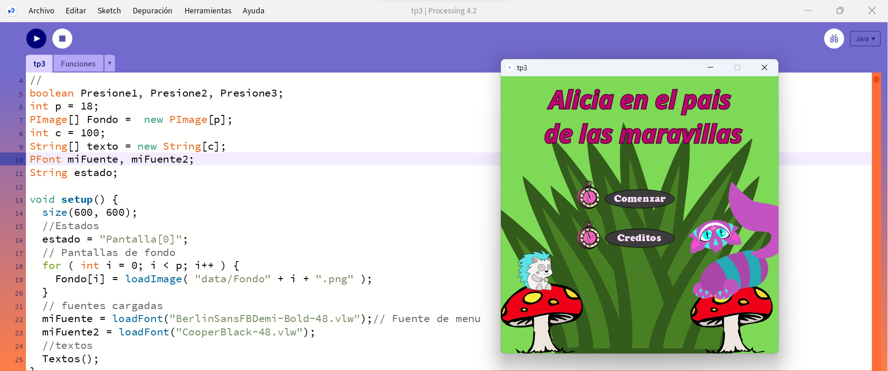
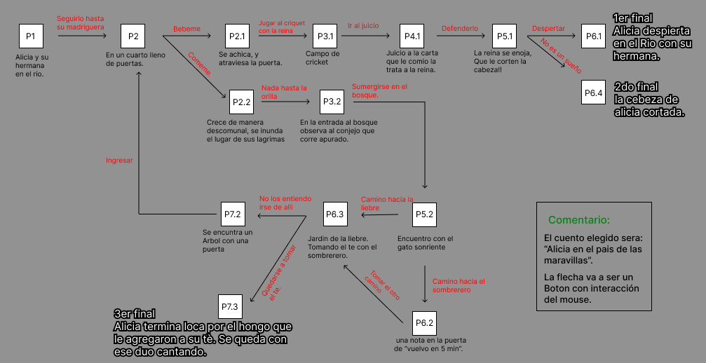
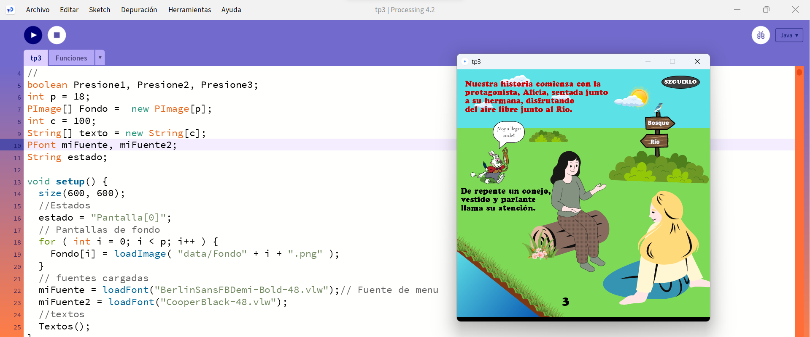
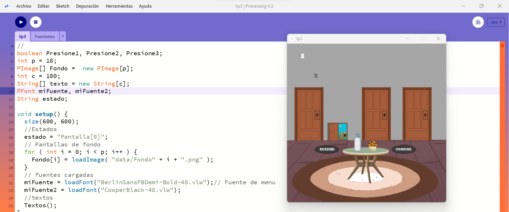
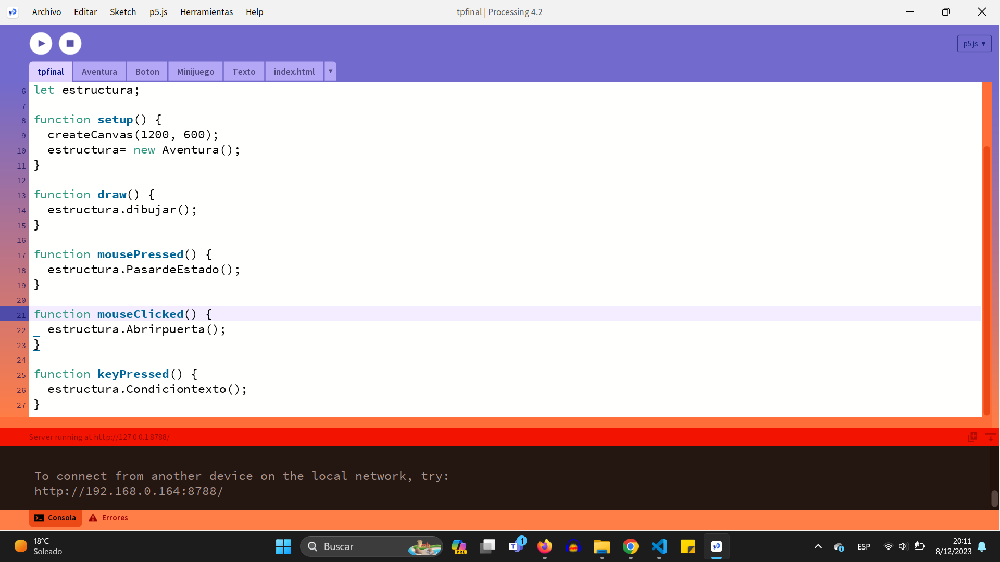
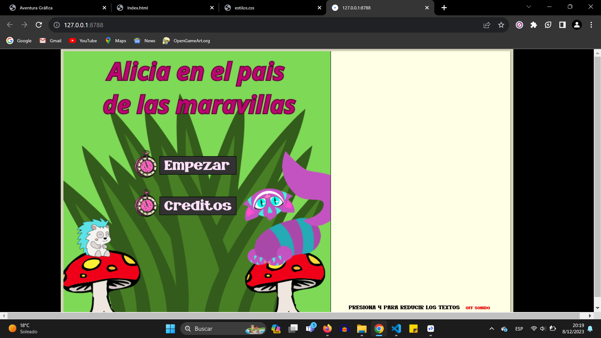
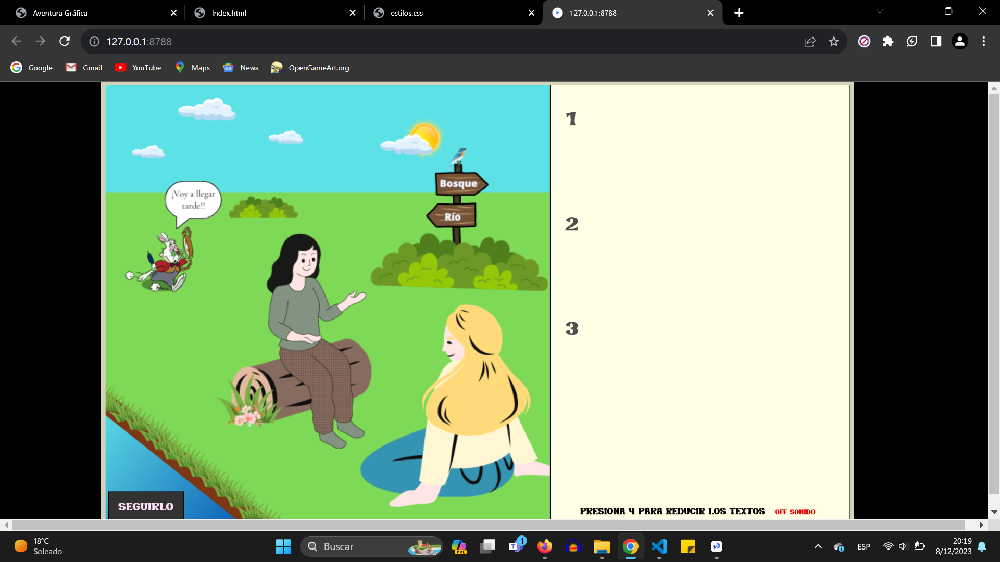
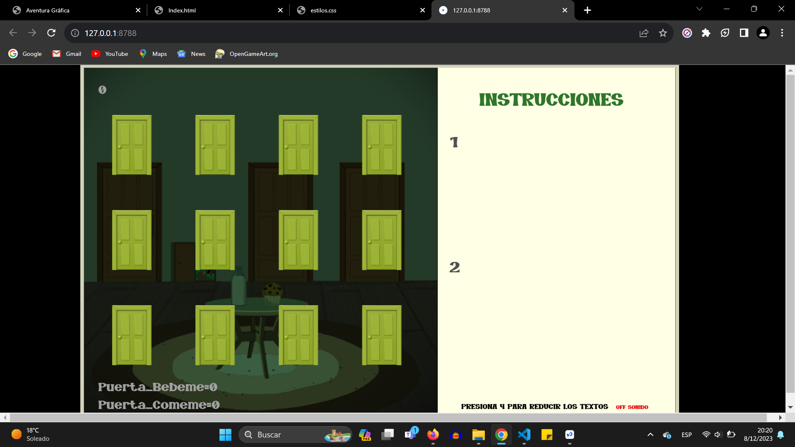

Versión original

"Alicia en el país de las maravillas" es un cuento infantil escrito por Lewis Carroll. La historia sigue a Alicia, una niña curiosa que cae por una madriguera de conejo y entra en un mundo surrealista lleno de criaturas extrañas y eventos absurdos. En su viaje, se encuentra con personajes peculiares como el Conejo Blanco, el Sombrerero Loco, la Reina de Corazones y el Gato de Cheshire.
A lo largo de la historia, Alicia experimenta cambios de tamaño inesperados, se enfrenta a desafíos absurdos y se sumerge en situaciones que desafían la lógica. La narrativa explora temas de identidad, crecimiento, y la naturaleza caprichosa de la realidad.
El cuento es conocido por su imaginación desbordante, diálogos ingeniosos y personajes extravagantes, convirtiéndolo en un clásico de la literatura infantil que ha fascinado a lectores de todas las edades desde su publicación en 1865.
"Alicia en el país de las maravillas" ha continuado cautivando a audiencias de todo el mundo. Su popularidad ha llevado a numerosas adaptaciones en diferentes formas de medios.... se han realizado diversas interpretaciones en cine, televisión y teatro, cada una aportando su propia visión única al encantador y enigmático universo creado por Lewis Carroll. Estas adaptaciones continúan sirviendo como homenajes creativos a la imaginación inagotable que caracteriza a "Alicia en el país de las maravillas".
Animada
Disney 1951
Fiel al espíritu del libro de Lewis Carroll, la película captura la extravagancia y el encanto del mundo de Alicia con su característica animación colorida y estilo visual distintivo.
La película presenta a los memorables personajes del libro, como el Conejo Blanco, el Sombrerero Loco, la Reina de Corazones y, por supuesto, el gato sonriente Cheshire. A través de canciones pegajosas y diálogos ingeniosos, la versión de Disney infunde nueva vida a la narrativa clásica, llevando a los espectadores a una travesía mágica junto a Alicia.
Aunque la adaptación no sigue estrictamente la trama del libro y agrega elementos propios, logra capturar la esencia del mundo de las maravillas y ha dejado una huella duradera en la cultura popular.
Live action
Disney 2010
La versión de Disney de "Alicia en el país de las maravillas" lanzada en 2010, dirigida por Tim Burton, ofrece una interpretación única y visualmente impactante del clásico de Lewis Carroll.
Con una estética más oscura y surrealista, sumerge al espectador en una ambiente representativo de Tim Burton, presenta a personajes emblemáticos de manera inédita, destacando la interpretación de Johnny Depp como el Sombrerero Loco.
Aunque la trama toma giros distintivos y agrega elementos nuevos, conserva la esencia fantástica del original, proporcionando una experiencia cinematográfica moderna y evocadora que ha dejado su propia huella en la rica historia de adaptaciones de Alicia.
Live action
Disney 2016
"Alicia a través del espejo", la secuela de la versión de Disney de 2010, lanzada en 2016, continúa explorando el mundo fantástico de Alicia de una manera fascinante.
Dirigida por James Bobin, la película presenta una mezcla cautivadora de aventura y fantasía, manteniendo la estética visual peculiar de su predecesora.
En esta entrega, Alicia viaja a través del tiempo para salvar al Sombrerero Loco, desentrañando eventos del pasado. Aunque introduce nuevas dimensiones a la historia original de Lewis Carroll, la película mantiene la esencia mágica y elenco estelar, incluyendo a Johnny Depp y Mia Wasikowska, ofreciendo a los espectadores una experiencia cinematográfica vibrante y emocionante que complementa la adaptación anterior.
Inicio
Hace unos meses, en mayo-junio, comenzó un trabajo para la materia de Tecnología Multimedial en la Facultad de Artes de la UNLP. Este consistía en elegir un cuento de una lista proporcionada a los alumnos, leerlo y crear nuestra aventura gráfica a través de la programación basada en ese cuento seleccionado. En un primer momento, utilizamos el lenguaje de Java en el programa de Processing.
Desde el principio del año, en la materia se trabajó con el lenguaje de Java. En las primeras instancias, los códigos eran extensos, con "choclos de información", llegando a tener, por ejemplo, entre 600 0 700 líneas de código.
Una vez seleccionado el cuento, en mi caso "Alicia en el país de las maravillas", era necesario crear un esquema y estructurar cómo sería nuestra aventura.
Las imagenes, seria lo primero que habia que realizar. Y los textos aparecian en pantalla al presionar 1, 2, 3, con la intencion de que el fondo no se tapara.
Todas las pantallas poseian la misma mecanica, hasta concluir en alguno de los tres finales de la Aventura...
Cambios y adaptar tps
Una vez iniciada la segunda parte de año, se cambio el lenguaje de programación de Java a JavaSript: P5JS. Se realizo un tp para adaptarse al cambio, y luego en el anteultimo trabajo se pidio que tomemos una desicion de nuetra aventura grafia del tp3 para crear un minijuego que influya en la desicion del camino a seguir...
Una vez que se comenzo en P5JS, además se modifico la manera en la que comenzamos programando a una nueva mas organizada y que estructura el codigo. Ya la pantalla de inicio se ve diferente y más "limpia".
En p5js en conparación a Jaba, se ejecuta en algun navegador web...
Con el cambio, se modificaron varios aspectos de la aventura en comparación al primer tp. Para aprovechar el espacio que te brinda la web, los textos se encuentran al lado de la pantalla, y posee un contendor: Tipo libro..
Tambien, se agrego sonido de fondo, y algunas aspecyos visuales como los botones, que en un prinicpio eran circulares y terminaron cuadrados.
Y Además, el minijuego habia que incorporar el minijuego a la aventura. El juego forma parte de una de las desiciones que se debe tomar al recorrer por la aventura gráfica.
En el siguiente boton se puede ingresar e interactuar con la misma...